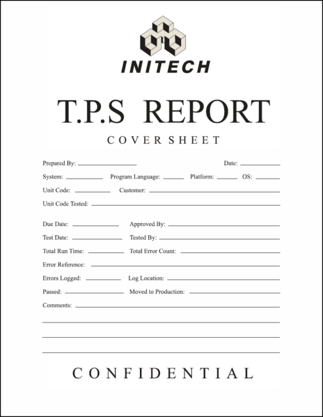

Test Procedure Specification
The Test Procedures are developed from both the Test Design and the Test Case Specification. The document describes how the tester will physically run the test, the physical set-up required, and the procedure steps that need to be followed. The standard defines ten procedure steps that may be applied when running a test.
Test Design Specification detailing test conditions and the expected results as well as test pass criteria. Test Case Specification specifying the test data for use in running the test conditions identified in the Test Design Specification Test Procedure Specification detailing how to run each test, including any set-up preconditions and the steps that need to be followed Test Item Transmittal Report reporting on when tested software components have progressed from one stage of testing to the next Test Log recording which tests cases were run, who ran them, in what order, and whether each test passed or failed Test Incident Report detailing, for any test that failed, the actual versus expected result, and other information intended to throw light on why a test has failed. This document is deliberately named as an incident report, and not a fault report. The reason is that a discrepancy between expected and actual results can occur for a number of reasons other than a fault in the system. These include the expected results being wrong, the test being run wrongly, or inconsistency in the requirements meaning that more than one interpretation could be made. The report consists of all details of the incident such as actual and expected results, when it failed, and any supporting evidence that will help in its resolution. The report will also include, if possible, an assessment of the impact of an incident upon testing.
Truly Integrted
COPY GOES HERE